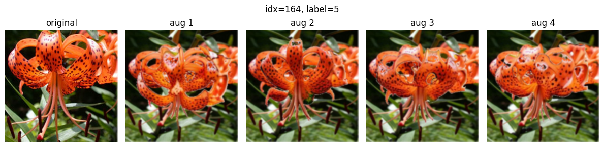
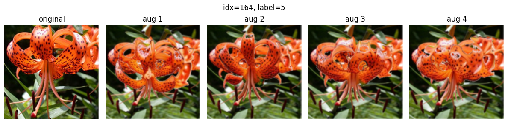

Experiences
Team Trentingrana 🧀
Competed in the Industrial AI Challenge to design sustainable industrial energy solutions. Developed predictive ML models on multi-source energy data to forecast demand and carbon footprint. Engineered AI simulations integrating biogas and solar systems for sustainable energy management. Applied deep reinforcement learning alongside genetic algorithms to cut production-related emissions.
Focused on bias mitigation in text-to-image models using ITI-GEN and Large Language Models. Explored fairness and ethical AI approaches in generative models.
Co-founded and developed a comprehensive digital legacy platform. Leading full-stack development using Flutter and Firebase, implementing secure data management, post-mortem access protocols, and succession planning tools.
 
